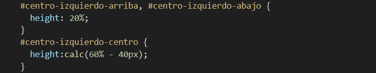
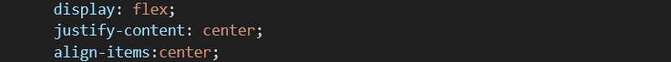
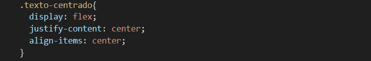

El código utilizado ha sido el siguiente:

El cuerpo de este documento HTML está formado por dos contenedores <div> que representan los cuadrados. Su color, tamaño y posición lo determinan las reglas cuyos selectores coinciden con los nombres de las clases a los que están vinculados.
La clase “cuadrado” es la única compartida por los dos contenedores y tiene asociada una regla de estilo que fija su tamaño en 100 × 100 píxeles (propiedades width y height). Las correspondientes a las clases “azul” y “amarillo” determinan el color de fondo de cada uno de ellos con la propiedad background-color. La última regla establece un posicionamiento relativo mediante el que el segundo contenedor se desplaza 100 píxeles a la derecha desde la posición que hubiera ocupado por defecto (propiedades position y left).
El modo de posicionamiento fijo especifica una ubicación permanente e inamovible en la pantalla, incluso aunque utilice la barra de scroll para desplazarse por la página o dicho espacio se vea ocupado por otros elementos. Esta ubicación vendrá determinada por las propiedades top, bottom, le y rigth, pero, a diferencia del posicionamiento relativo, ahora sus valores marcan la separación de los lados del elemento con los bordes de la ventana del navegador. Por ejemplo, top fija la distancia entre el lado superior del contenedor y el del elemento contenido, con bottom esa distancia es la que hay entre el lado inferior del contenedor y el del elemento contenido, etc.
El siguiente documento HTML le ayudará entender la forma de actuar de este modo de posicionamiento:
El código es muy sencillo, ya que el cuerpo del documento está formado por un conjunto de párrafos que se repiten muchas veces, de forma que haya que utilizar la barra de desplazamiento para verlos todos (los puntos suspensivos no forman parte del documento HTML, representan los que se han excluido a fin de no hacer innecesariamente largo el código). El único que es diferente es el último, ya que tiene asociado un identificador (atributo id) cuyo valor es el selector de la regla de estilo mediante la que se establece que su posicionamiento sea fijo (el valor de la propiedad position es fixed). Eso significa que no se situará debajo del párrafo anterior, sino en la ubicación establecida por las propiedades bottom y right. Puesto que en ambos casos su valor es de 0 píxeles significa que este quedará pegado a la esquina inferior derecha del navegador. Finalmente, con objeto de diferenciar este texto de los demás se escribe en negrita (la propiedad font-weight toma el valor bold), tal como puede ver a continuación.
Si no le apareciera la barra de scroll vertical, reduzca la altura de la ventana (o añada más párrafos al código). Cuando la vea, muévala hacia arriba y hacia abajo. Comprobará cómo se desplaza el texto de todos los párrafos, excepto el del último, que permanece inmóvil en la esquina inferior derecha.
El modo de posicionamiento absoluto funciona como el fijo, excepto que no utiliza como referencia la ventana del navegador, sino el área del contenedor en el que se encuentra. Por ese motivo, y a diferencia del modo fijo, dicho elemento sí se desplaza al hacer scroll en la página.
Si quiere experimentar con este tipo de posicionamiento, solo tiene que asignar el valor absolute a la propiedad position de la regla de estilo del código de ejemplo anterior. Luego, cargue la página y compruebe que ahora el texto del último párrafo también se desplaza con el resto del contenido de la página.

Para demostrar que este modo de posicionamiento (y el fijo) se puede realizar tomando como referencia el contenedor en el que se encuentra un elemento, en vez de la pantalla, se va a desarrollar un código que dibuja un cuadrado azul situado en la esquina inferior derecha del navegador, dentro del que se incluye otro amarillo de menor tamaño, ubicado en la esquina superior izquierda del primero. A continuación, se muestra el resultado que se quiere obtener.

El código utilizado ha sido es el siguiente:
Como puede observar, el cuerpo del elemento está formado por dos contenedores <div>, uno dentro del otro. Eso permitirá situar el interior respecto del exterior.
Cada cuadrado se representa mediante un contenedor (<div>) cuyo aspecto y posición se define en la regla de estilo correspondiente (el selector coincide con su identificador).
El color y el tamaño se especifica con las propiedades background- color, width y height. El contenedor exterior es de color azul y un tamaño de 100 × 100 píxeles. El interior, de color amarillo y una superficie de 50 × 50 píxeles.
Ambos contenedores establecen un posicionamiento absoluto (el valor de la propiedad position es absolute). Sin embargo, en el exterior (azul) su emplazamiento definitivo lo determinan las propiedades bottom y right, que lo colocan en la esquina inferior derecha de la pantalla. En cambio, las propiedades top y left llevan el interior (amarillo) a la esquina superior izquierda del contenedor anterior (no de la pantalla), que es en el que se encuentra.
Esta ordenación de componentes permanecerá inalterable, independientemente del tamaño de la ventana. Para comprobarlo solo tiene que redimensionarla.
El posicionamiento absoluto es un recurso muy empleado para situar texto encima de imágenes. Hasta ahora, solo ha podido escribir sobre una imagen cuando esta era el fondo de pantalla. En el resto de ocasiones no ha sido posible porque los modos de presentación, tanto de las imágenes como de los textos, les asignaban un área de uso exclusivo. Sin embargo, gracias a la propiedad position podrá colocarlos donde quiera, independientemente de si dicho espacio está o no ocupado.
Para demostrarlo, desarrollará un código HTML que permita escribir el nombre y una breve descripción de la Fontana de Trevi sobre su propia imagen, tal como puede ver a continuación:
El código utilizado es el siguiente:
El cuerpo de mensaje está formado por la etiqueta <img> con la que se muestra la imagen de la Fontana de Trevi y un contenedor (etiqueta <div>) dentro del que se incluye el texto que se sobrescribirá sobre la imagen: un encabezado principal como título (etiqueta <h1>) y un párrafo (etiqueta <p>) a modo de breve descripción.
En la cabecera del documento están las reglas de estilo de la imagen y el contenedor. La de la imagen establece que su ancho sea del 50% de la pantalla y un nivel de transparencia de 0.5 (propiedades width y opacity). Así, se podrá ver con claridad el texto que se sobrescriba encima. Al no existir ninguna propiedad que indique la posición que debe ocupar en la pantalla, esta se muestra por defecto en la parte superior izquierda.
La regla de estilo del contenedor usa un modo de posicionamiento absoluto (el valor de la propiedad position es absolute) cuyas propiedades top y left lo sitúan en la esquina superior izquierda (el valor de ambas es 0), coincidiendo con la imagen. El margen interno de 25 píxeles se añade por motivos estéticos, para que el texto no empiece a escribirse en el mismo borde izquierdo de la imagen. Por la misma razón, el ancho se limita al 40% para que tampoco exceda los límites de esta (propiedad width).
Una vez escrito el código, cárguelo en Chrome y modifique el tamaño de la ventana del navegador para comprobar que su comportamiento coincide con el descrito.
A diferencia de los modos de presentación anteriores, los elementos que utilizan la propiedad position para ubicarse en la pantalla (excepto si toma el valor por defecto, static) pueden invadir el espacio de otros y, en consecuencia, ocultarlos parcial o totalmente.
Cuando varios elementos se solapan, puede ser necesario determinar el orden en el que se apilan, ya que eso determina cuál se ve encima del resto. Por ese motivo, HTML proporciona la propiedad z-index, cuyo valor es un número positivo o negativo (nivel de apilamiento). Un elemento con un número de apilamiento mayor estará colocado sobre los que tengan un valor inferior.
Para poner en relieve esta propiedad, el siguiente código muestra tres cuadrados de distintos colores que se solapan:
El cuerpo del documento HTML está formado por tres contenedores, que representan los tres cuadrados que se va a solapar.
Todos ellos comparten una serie de características comunes, que se agrupan en la regla de estilo cuyo selector es el nombre de la etiqueta <div>. En su bloque de declaraciones se especifican sus dimensiones (propiedades width y height), un borde (propiedad border) y un tipo de posicionamiento absoluto (la propiedad position tiene el valor absolute).
Cada contenedor tiene asociado un identificador que se utiliza como selector en la regla que les asigna un color de fondo (propiedad background-color) y una posición (atributos top y left). Así, el blanco está situado en la esquina superior izquierda, mientras que el azul claro y el oscuro se desplazan 50 y 100 píxeles a la derecha y hacia abajo, respectivamente.
El resultado se puede ver a continuación:

Como no se ha utilizado la propiedad z-index, el navegador los ha ido mostrando en el orden que se encuentran en el documento HTML. Así, primero ha situado el blanco, luego ha colocado el azul claro sobre este y, finamente, el azul oscuro en primer plano.
Si quiere revertir este orden, añada la propiedad z-index a las reglas de estilo de cada uno de ellos:

Ahora, el navegador emplea el valor de dicha propiedad para determinar el orden en el que se muestran en pantalla, en este caso, empezando por el azul oscuro para terminar por el banco, que aparecerá encima de los demás, tal como puede comprobar en esta otra imagen:

Le animo a combinar distintos valores de esta propiedad y observar los cambios producidos.
Durante el diseño de una página web tendrá que hacer uso de múltiples recursos visuales que la hagan atractiva y fácil de usar y, en especial, los de alineación o centrado de elemento, tanto respecto de la propia página como de cualquiera de los contenedores que la compongan. Por ese motivo, antes de comenzar el desarrollo del código HTML deberá tener claras todas las opciones que dispone para:
o Centrar los elementos horizontalmente.
o Central los elementos verticalmente.
o Alinear los elementos en la parte superior o inferior, a la izquierda o a la derecha.
A continuación, se describe en detalle las alternativas con las que cuenta en cada caso.
A lo largo de las páginas de este libro se han ido realizando ejercicios en los que ya ha tenido ocasión de utilizar técnicas de centrado horizontal. Una de ellas se aplicaba únicamente a textos y consistía en asignar el valor center a la propiedad text-align, tal como se hace en este código de ejemplo:
A continuación, se puede apreciar que el texto queda centrado en la página, aunque se modifique el ancho de la ventana del navegador.

Esto mismo se puede hacer dentro de un contenedor, independientemente de donde esté situado. El siguiente código lo demuestra:
Como puede observar, en el cuerpo del documento hay un contenedor <div>, dentro del que se encuentra un encabezado <h1>.
La única regla de estilo afecta al contenedor; en concreto, a su aspecto y a su posición en la pantalla. Esta última se establece de forma relativa (la propiedad position toma el valor relative) para poder desplazarlo 100 píxeles a la derecha y debajo de la posición asignada por el navegador (propiedades top y left). Con el fin de comprobar que el texto del encabezado queda centrado en el área ocupada por el contenedor, se le ha dado un ancho de 400 píxeles (propiedad width) y se ha dibujado un borde que delimita claramente dicha área (propiedad border). Por último, la propiedad text-align centra el texto dentro del contenedor.
La siguiente imagen así lo demuestra.
¿Y si quisiera que el contenedor también estuviera centrado horizontalmente? En ese caso, deberá utilizar la propiedad margin, a la que tendría que asignar el valor auto. Eso provocará que el navegador reparta de forma homogénea el espacio entre ambos lados del elemento. Para confirmarlo, sustituya la regla de estilo del documento anterior por:
En primer lugar, se ha eliminado la propiedad left que forzaba al contenedor a situarse en una posición horizontal determinada (en concreto, 100 píxeles a la derecha de la que tendría por defecto). Así, la propiedad margin puede actuar para cumplir con su objetivo, tal como se puede ver a continuación.
Si lo que se pretende centrar no es un contenedor sino una imagen, el procedimiento es el mismo, solo que, al mostrarse por defecto en línea, antes deberá forzar que lo haga en bloque. Eso se consigue asignando el valor block a la propiedad display, tal como se hace en este otro código de ejemplo:
El cuerpo de este documento HTML está formado únicamente por la etiqueta <img> con la imagen del Coliseo.
En el bloque de declaraciones de la regla que tiene asociada, lo primero que se hace es asignar un modo de presentación en bloque (la propiedad display toma el valor block) para poder centrarla horizontalmente con la propiedad margin (a la que se asigna el valor auto). Con la propiedad width se ajusta el tamaño de la imagen al ancho deseado (no interviene en el centrado).
A continuación, se puede ver el resultado obtenido, donde se aprecia que el Coliseo queda centrado en sentido horizontal.

Naturalmente, este método se puede utilizar para centrar imágenes dentro de un contenedor, no solo en la página.
Otra forma de centrar una imagen o un texto dentro de un contenedor es el empleo de un modo de presentación de caja flexible (la propiedad display toma el valor flex). En este modo, la función de centrado la asumiría la propiedad justify-content, a la que habría que asignar el valor center.
En el siguiente ejercicio se usarán ambas propiedades para obtener este resultado:

El contenedor dispone de un borde que pone en evidencia que la imagen está centrada horizontalmente en su interior y este, a su vez, en la pantalla.
El código utilizado es muy sencillo:

Como cabía esperar, el cuerpo del documento solo está formado por un contenedor <div>, dentro del que se encuentra la etiqueta <img> con la que se muestra la imagen del Coliseo.
En la cabecera se han creado dos reglas de estilo. La de la imagen especifica un ancho de 200 píxeles (propiedad width). La del contenedor emplea la propiedad margin para centrarlo horizontalmente en la ventana del navegador (su valor es auto) y las propiedades display y justify-content para centrar la imagen en su interior (la primera toma el valor flex y la segunda, center).
Si en la sección anterior se explicaron diversas formas de centrar un elemento horizontalmente, en esta se describirán las que permitan hacerlo en sentido vertical. La primera de todas vuelve a basarse en el uso de un modo de presentación de caja flexible (la propiedad display toma el valor flex), ahora en combinación con la propiedad align-items (en vez de justify-content).
Con el fin de demostrarlo, modificará el código del ejercicio anterior para que la imagen del Coliseo quede centrada verticalmente (además de horizontalmente) dentro del contenedor donde se encuentra. El resultado que se pretende obtener es el siguiente:

El código utilizado para conseguir este resultado es prácticamente el mismo del ejercicio anterior:
Los únicos cambios que se han realizado en el documento HTML de base afectan solo a la regla de estilo, a la que se ha añadido la propiedad align-items para centrar la imagen verticalmente dentro del contenedor. La propiedad height se agrega solo con el fin de que el contenedor sea más alto que la imagen y, así, verificar el resultado.
En este código, la propiedad margin centra horizontalmente el contenedor en la pantalla, mientras que las propiedades display, justify-content y align-items centran la imagen en sentido horizontal y vertical en su interior. Pero ¿qué tendría que hacer si quisiera centrarlo también verticalmente? Existen varias alternativas, una de las cuales pasa por el uso de una nueva propiedad: transform.
La función de esta propiedad es cambiar el sistema de coordenadas en el que se muestra un elemento con el fin de moverlo, rotarlo, escalarlo, etc. Por lo tanto, tiene innumerables aplicaciones de las que solo se aprovechará la que permite centrarlo verticalmente. Para ello, deberá asignar a esta propiedad la siguiente función de transformación:
translate(distancia en el eje X, distancia en el eje Y)
Con carácter general, la misión de esta función es desplazar un elemento HTML la distancia indicada en los ejes X e Y. Dicha distancia puede estar expresada en cualquiera de las unidades de medida que ya conoce. También puede ser un porcentaje del tamaño del propio elemento (no del contenedor en el que se encuentre), es decir, de su ancho en el eje X o de su alto en el eje Y. Un valor positivo desplazaría el elemento hacia la derecha o hacia abajo. Si fuera negativo lo haría hacia la izquierda o hacia la arriba.
Si desea realizar el desplazamiento en un solo eje, utilice las funciones:
translateX(distancia)
translateY(distancia)
A fin de practicar con la propiedad transform y la función translate(), modificará el código del documento HTML anterior para que tanto el contenedor como la imagen aparezcan centrados horizontal y verticalmente en la pantalla.
A continuación, se muestra el resultado que se pretende obtener:

Para conseguirlo, solo tiene que sustituir la regla de estilo del contenedor por la siguiente:
Las diferencias con la regla de estilo anterior son las siguientes:
Desaparece la propiedad margin, cuyo valor auto hacía que el contenedor quedara centrado horizontalmente. En este nuevo código, la propiedad transform será ahora la responsable de centrarlo tanto horizontal como verticalmente.
o El posicionamiento del contenedor pasa de ser relativo a absoluto (el valor de la propiedad position es absolute).
o Las propiedades top y left sitúan la esquina superior izquierda del contenedor en el centro de la pantalla (su
valor es la mitad del ancho y el alto de esta, es decir, un 50%). En la imagen que hay a continuación dicho punto se
representa como (1).
o Por último, se asigna la función translate() a la propiedad transform. Los argumentos de esta función (-50% y
-50%) trasladan la esquina superior izquierda del contenedor hacia arriba y hacia la izquierda la mitad de su tamaño
para que su centro coincida con el de la página web (o el del contenedor en el que pudiera estar incluido). La
siguiente imagen muestra gráficamente este desplazamiento, efectuado desde el punto (1) al (2).
En resumen, la combinación de valores de las siguientes propiedades centra el contenedor en sentido horizontal y vertical:
Mientras estas otras propiedades hacen lo mismo con los elementos que contiene:
Una vez realizados todos estos cambios, refresque la página del navegador. Luego, modifique el tamaño de la ventana y compruebe que tanto el contenedor como la imagen siempre permanecen centrados.
Para finalizar esta sección, si lo que se pretende es centrar en pantalla una imagen que no está dentro de ningún contenedor, el código es mucho más sencillo:
El cuerpo del documento HTML solo contiene la etiqueta <img>, cuyo tamaño y posición se ve afectada por la única regla de estilo que existe. Además de un ancho de 200 píxeles, en ella se establece un tipo de posicionamiento absoluto (el valor de la propiedad position es absolute) con objeto de situar la esquina superior izquierda de la imagen en el centro de la pantalla (propiedades top y left) para, finalmente, desplazarla hasta dejarla centrada (propiedad transform).
Además de centrar los elementos, en muchas ocasiones el diseño de una página requiere colocarlos a los lados de la pantalla (o del contenedor en el que se encuentren). Si quiere hacerlo a derecha e izquierda solo tiene que convertirlos en elementos flotantes, asignando el valor rigth o left a la propiedad float. Para desplazarlos hacia arriba o hacia debajo tendrá que utilizar la propiedad position.
Con el fin de demostrar las posibilidades de esta última propiedad, realizará un ejercicio que señale los puntos cardinales en la ventana del navegador, tal como se muestra a continuación:

El código utilizado para obtener este resultado ha sido el siguiente:
El cuerpo del mensaje está formado por 9 contenedores <div>, dentro de los que se encuentra el acrónimo que señala el punto cardinal en el que los sitúa la regla de estilo cuyo selector coincide con su identificador (excepto el primero, por el motivo que se explicará más adelante).
Dichas reglas se encuentran en la cabecera del documento HTML, la primera de las cuales se utiliza para establecer un margen de separación de 0 píxeles entre los elementos de la página (en este caso los contenedores) y los lados de la ventana del navegador.
La siguiente regla de estilo también tiene un selector de etiqueta y determina el color de fondo y el de tinta de todos los contenedores (propiedades background-color y color). Asimismo, fija un ancho de 50 píxeles (propiedad width), mientras que el alto viene determinado por el de la línea de texto que hay dentro (propiedad line-height). Recuerde que el alto del contenedor coincide con el del contenido (a no ser que se trate de elementos flotantes); en este caso, el de la línea de texto, que es de 50 píxeles. Al ser mayor que el de la fuente, de tan solo 25 píxeles (propiedad font-size), el texto quedará centrado verticalmente dentro del contenedor. Para hacer lo mismo horizontalmente, se asigna el valor center a la propiedad text-align. Por último, se establece un posicionamiento absoluto (la propiedad position toma el valor absolute), ya que será con el que se ubiquen todos los contenedores.
Para colocar en su posición el primer contenedor, aquel que indica el noroeste, no se requiere ninguna regla de estilo, ya que, por defecto, el navegador lo pone en la parte superior izquierda de la pantalla.
Los contenedores localizados en los puntos noreste, sureste y suroeste se emplazan en su posición asignando el valor 0 a una o varias de las propiedades top, bottom, left y right, según corresponda.
Las reglas de los contenedores situados en el norte, sur, este y oeste, además de las propiedades anteriores, deben utilizar transform para desplazarlos al punto medio del lado correspondiente. Al igual que el contenedor central, a dicha propiedad se le asigna la función translate(). La combinación de los valores de sus argumentos, así como el de las propiedades top, bottom, left o right, son las que colocan a cada uno en su sitio.
Analice detenidamente todos estos valores para entender por qué se han utilizado esos y no otros. Le animo a que experimente con ellos y vea los efectos que provoca cualquier modificación. Es la mejor forma de entender el comportamiento de estas propiedades, imprescindibles en el diseño de muchas páginas web.
Todas las páginas web profesionales deben seguir un diseño, más o menos complejo, que, de forma genérica, divide (o agrupa) el contenido en secciones. Aunque su apariencia depende de la imaginación de sus creadores, uno comúnmente aceptado es aquel en el que la parte superior está ocupada por una cabecera y una barra de navegación. La parte central se reserva para el contenido principal que, generalmente, va acompañado de una o varias secciones laterales con información relacionada. Por último, en la parte inferior suele haber un pie de página con datos de contacto y otros de carácter auxiliar relacionados con el propio sitio web.
Cada una de estas secciones se representan mediante contenedores que se reparten el espacio de una forma más o menos sofisticada. Sin embargo, esta distribución aparentemente intrincada se puede descomponer en patrones más sencillos, como los descritos en las siguientes secciones. Su combinación permitiría abordar cualquier tipo de diseño, por difícil que parezca.
Uno de los patrones de diseño que utilizará con frecuencia, es aquel en el que los elementos ocupan todo el ancho disponible, que se reparte proporcionalmente entre ellos. De esa forma, se consigue mantener la misma distribución, aunque se redimensione la ventana del navegador.
La siguiente imagen es un ejemplo representativo. Como puede observar, está formado por tres contenedores que incluyen un texto. Los dos situados en los extremos ocupan un 20% del ancho de la ventana del navegador y el del medio el espacio restante.

Para conseguir este resultado, se ha utilizado el siguiente código:
Como puede observar, el cuerpo del documento HTML está formado por tres contenedores que representan las tres secciones en las que se distribuye el contenido de la página. Todos tienen asociado un identificador (atributo id), que se utiliza como selector en la regla de estilo con la que se especifica el ancho de cada uno de ellos.
En la regla de estilo que afecta a todos los contenedores <div> se establece un modo de presentación en línea (la propiedad display tiene el valor inline) que los coloca en fila. Luego, se asigna el valor border-box a la propiedad box-sizing, por lo que el valor de la propiedad width especificado en el resto de las reglas tendrá en cuenta el margen interno y el borde del contenedor.
El margen interno y externo será de 10 píxeles (propiedades padding y margin) y el borde estará formado por una línea continua (la propiedad border toma el valor solid). La última declaración de esta regla centra el texto dentro de los contenedores, la propiedad text-align toma el valor center.
Ya solo queda asignar el ancho de cada contenedor. El del izquierdo y el derecho es el mismo, razón por la que comparten la misma regla de estilo con un selector múltiple, cuya única declaración asigna un valor del 20% a la propiedad width.
La última regla de estilo asigna el ancho restante al contenedor central, que es el 60% menos el espacio ocupado por los márgenes externos que los separan entre sí y con los bordes del navegador (10 píxeles a cada lado de los tres contenedores, es decir, 40 píxeles):
calc(60% - 40px);
Una vez guardado el documento HTML en un archivo, ábralo con Chrome y compruebe que las secciones se distribuyen de la forma esperada, incluso aunque modifique el ancho de la ventana del navegador.
Con el fin de cubrir todos los escenarios posibles, en esta sección se describirá cómo distribuir verticalmente el espacio disponible en la ventana del navegador entre las secciones componentes del diseño de una página. La siguiente imagen muestra un ejemplo de lo que se pretende conseguir:

En este caso concreto, la altura del contenedor superior e inferior es un 20% de la ventana del navegador. La del central es un 60% menos el espacio ocupado por los márgenes externos.
El código utilizado es el siguiente:
De nuevo, el cuerpo del documento HTML está formado por tres contenedores, cuyo identificador es el selector de la regla que determina su altura.
La regla que define las características comunes de todos los contenedores hace uso de las mismas propiedades descritas en el ejercicio anterior, excepto display. No es necesaria porque estos se muestran por defecto en modo bloque (uno debajo del otro).
Respecto a las reglas que tienen como selector el identificador de cada uno de los contenedores, la única diferencia con las del ejercicio anterior es que estas emplean vh como unidad de medida (en vez de un porcentaje). Como sabe 1vh equivale al 1% de la altura de la ventana del navegador.
Cargue este archivo en Chrome y compruebe que las secciones se distribuyen como estaba previsto, incluso aunque modifique el tamaño de la ventana del navegador.
Para terminar el capítulo, en esta última sección realizará un ejercicio en el que se demuestre que el reparto proporcional de espacios no solo se puede efectuar en el contexto de la página, sino también dentro de un contenedor, lo que permite combinar elementos distribuidos horizontal y verticalmente. Para ello, dividirá transversalmente en dos mitades el contenedor central del ejercicio anterior y, dentro del que está a la izquierda, creará otras tres secciones colocadas verticalmente en la proporción 20% - 60% - 20%. El resultado que se pretende conseguir es el siguiente:

Se partirá del código del documento HTML del ejercicio anterior, sobre el que se realizará una serie de modificaciones, empezando por el cuerpo, que deberá sustituirse por este otro:
Como puede observar, se mantienen los contenedores (<div>) correspondientes a las secciones cuyo identificador era “arriba”, “centro” y “abajo” del ejercicio anterior. La diferencia es que, dentro del contenedor central se han añadido dos nuevos contenedores (“centro-izquierdo” y “centro-derecho”), de los cuales, el de la izquierda incluye, a su vez, otros tres contenedores adicionales (“centro-izquierdo-arriba”, “centro-izquierdo-centro” y “centro- izquierdo-abajo”). El tamaño y la distribución de cada uno de ellos se determina mediante las adecuadas reglas de estilo. En los dos primeros será del 50% en dirección horizontal y en los tres últimos del 20% - 60% -20% en vertical. Veamos cómo se consigue.
La regla de estilo que afecta a todos los contenedores <div> (su selector es el nombre de dicha etiqueta) coincide con la del documento HTML tomado de base. Lo mismo sucede con las que atañen a los contenedores superior e inferior (identificadores “arriba”, y “abajo”). La única que cambia es la correspondiente al central (“centro”), ya que ahora debe distribuir en sentido horizontal los dos nuevos contenedores que incluye. Por ese motivo, al bloque de declaraciones de esta regla se añade la propiedad display, a la que se asigna el valor flex para establecer un modelo de distribución de caja flexible. Como sabe, dicha propiedad trabaja de forma conjunta con flex-direction, que al tomar el valor row distribuye horizontalmente los elementos que contiene. Por lo tanto, la regla del contenedor central quedaría así:
Solo queda dividir el espacio de esta sección en dos partes iguales mediante la siguiente regla, cuyo selector combina los identificadores de los dos contenedores interiores (“centro-izquierdo” y “centro- derecho”):
Como ambos deben repartirse el espacio horizontalmente a partes iguales, se asigna un 50% a la propiedad width.
La forma de distribuir el espacio del contenedor izquierdo (“centro- izquierdo”) es similar a la utilizada en el ejercicio original, salvo que ahora se utilizan porcentajes, en vez ‘vh’, ya que esta unidad toma como referencia la altura de la ventana del navegador, no la del del contenedor. Por lo tanto, las reglas de estilo que faltaría por añadir son:
Una vez desarrollado el código, abra la página con Chrome y compruebe que su aspecto es el esperado. Modifique el tamaño del navegador y verifique que se mantienen las proporciones de todos los contenedores (siempre que haya espacio suficiente).
Llegado a este punto, ¿qué le parecería combinar las técnicas de centrado con las de reparto del espacio? Para demostrarle que es mucho más fácil de lo que parece, realizará una nueva práctica en la que se centran horizontal y verticalmente los textos incluidos en los contenedores (ahora solo lo están en sentido horizontal). Para ello, se utilizará una vez más el modo de caja flexible, por lo que deberá añadir el siguiente grupo de declaraciones a las reglas de estilo adecuadas en el documento HTML anterior:
Pero ¿cuáles son dichas reglas? Puede que esté pensando en hacerlo en la que afecta a todos los contenedores, que quedaría así:
Sin embargo, si lo hiciera obtendría el siguiente resultado:
El motivo es que esta regla de estilo centra horizontal y verticalmente todos los elementos incluidos dentro de los contenedores, no solo el texto, sino también los contenedores interiores. Sin embargo, estos últimos no deben centrarse, sino mantener la distribución horizontal o vertical que tuvieran, según el caso.
Por lo tanto, las propiedades display, justify-content y align-items tendrán que añadirse únicamente a las reglas que afecten exclusivamente a los elementos que se vayan a centrar, es decir, las de los contenedores que solo tengan texto. Se trata de aquellos cuyos identificadores son “arriba”, “abajo”, “centro-derecho”, “centro-izquierdo-arriba”, “centro-izquierdo-abajo” y “centro- izquierdo-centro”. Los que tienen como identificadores “centro” y “centro-izquierdo” quedarán excluidos porque incluyen otros contenedores que no deben centrarse (en el primero se tiene que mantener una dis-tribución horizontal y en el segundo vertical).
Un último detalle, como había una regla cuyo selector era una combinación de dos clases (“centro-izquierdo” y “centro-derecho”), la primera de las cuales está asociada a un contenedor cuyo contenido no debe centrarse y la otra sí, hay que dividirla en dos. Por eso, la regla:
Se convierte en estas otras dos:
Una vez hecho este último cambio, se obtendría el siguiente resultado:
Otra posibilidad sería crear la siguiente regla de estilo, cuyo selector es una nueva clase (“texto-centrado”) que habría que vincular a los contenedores correspondientes mediante el atributo class:
